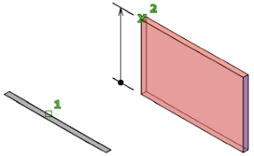

To create a 3D design, you need to know how to use a CAD, or computer aided design, software. I recommend Onshape since it is a free platform you can use on a browser.
CAD design primarily involves creating sketches and extruding those 2D sketches into 3D objects. You can make a straight extrusion perpendicular to the sketch plane. For example, extruding a sketch of a circle would create a cylinder. You can also make a revolved extrusion, revolving the sketch around an axis. For example, revolving a sketch of a circle would create a sphere or a donut depending on where the axis of revolution is. There is the option to both add and cut away material with these extrusions. There are many more tools you can use, but these are the basics.
Once you have your model created in a part studio, you can add it to an assembly, which allows you to attach multiple parts together to see how they interact.